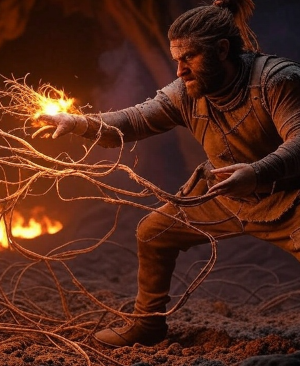
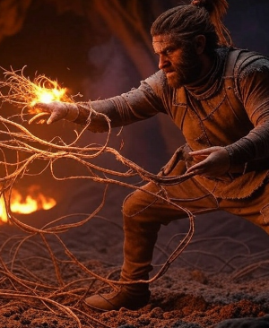

The Jungle Scavenger
 

Profile
Name: Talyn
Role: Ally, Scavenger of the Living Jungle
Gender: Male
Age: 35
Appearance
Lean and scarred—calloused hands beneath a leather jerkin patched with vinewood. Brown, tangled hair streaked with sap, tied with a raptor feather. Brown eyes gleam with cunning, boots thick with mud from golem husks.
Personality
Gritty and wry—Talyn’s rough humor masks a guarded hope, his respect earned through deeds. Stubborn yet resourceful, his gruffness shields a flicker of purpose sparked by Aria’s fire.
Abilities
Health: 90 | Stamina: 55 | Essence: 10 | Agility: 10 | Resistance: 5
Pick Strike: Jagged jabs (10 damage, 5 Stamina)—fierce and practical.
Fire Toss: Flint spark (12 damage, 8 Stamina)—ignites foes or vines.
Scrap Craft: Gifts Grok’s Lantern parts—enhances relic use.
Background
Born in the Living Jungle, Talyn lost his mother to insects at 15, inheriting a Vinewood Pick and a survivor’s creed. He’s scavenged since, snagging the Vineweaver’s Cord—Aria’s fiery hair ignites a spark of alliance in the Cave of Flames.
Role
Talyn aids Aria’s jungle trials—his Vineweaver’s Cord and grit ground her resolve, a stubborn foil whose practical aid shapes her fiery path through the wild.